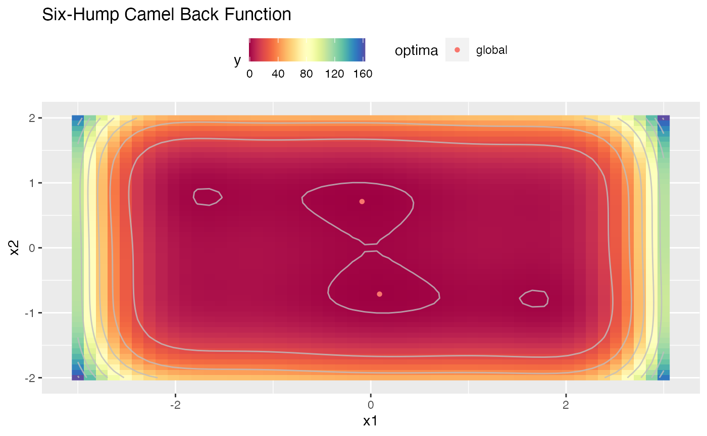
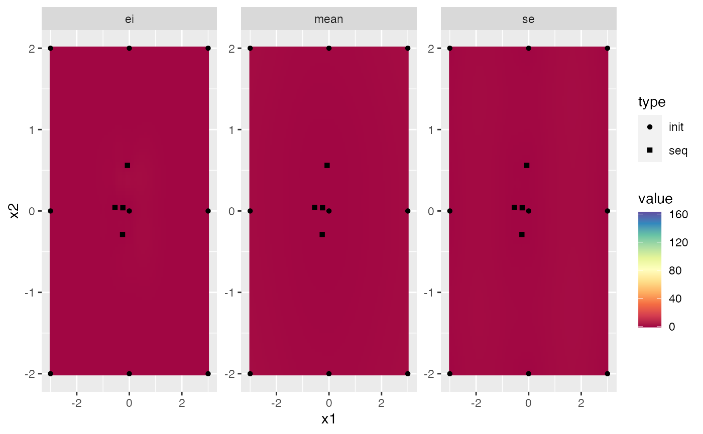
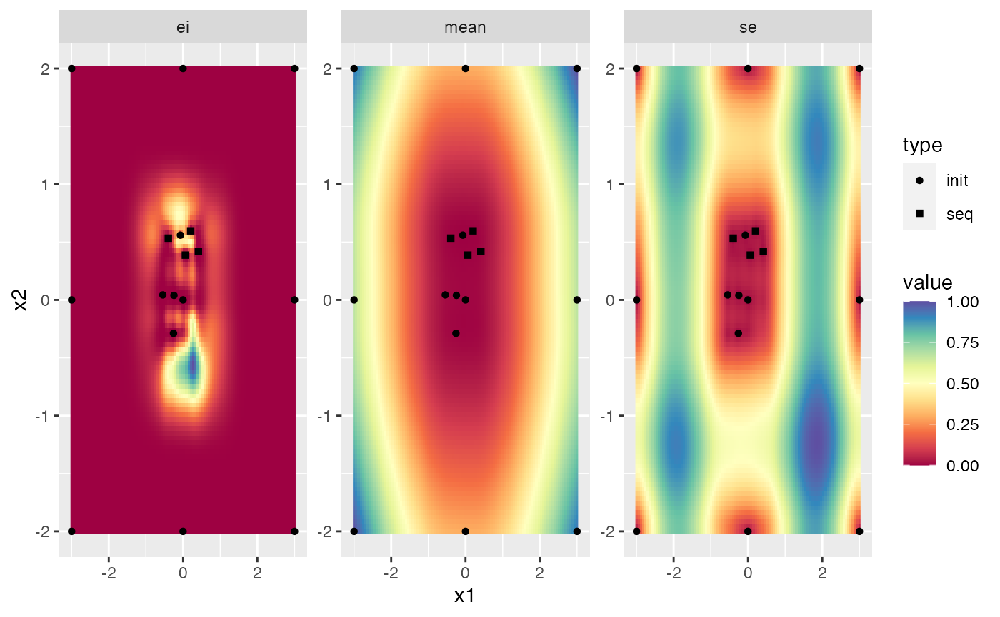

This Vignette will give you a short overview on how to warm-start your optimization. It will consider three kinds of warm starting. First, you can warm-start your optimization on any pre-evaluated design. Second, you can continue optimizing a terminated optimization. Third, you can continue any failed optimization if you took the right precautions.
First, we will construct our problem that will be used for the following examples
library(mlrMBO)
obj.fun = makeSixHumpCamelFunction()
ggplot2::autoplot(obj.fun, render.levels = TRUE, show.optimum = TRUE)
First we create the pre-evaluated design.
design = generateGridDesign(getParamSet(obj.fun), resolution = 3)
design$y = apply(design, 1, obj.fun)
design
## x1 x2 y
## 1 -3 -2 162.9
## 2 0 -2 48.0
## 3 3 -2 150.9
## 4 -3 0 108.9
## 5 0 0 0.0
## 6 3 0 108.9
## 7 -3 2 150.9
## 8 0 2 48.0
## 9 3 2 162.9Now we define out MBO Settings.
ctrl = makeMBOControl()
ctrl = setMBOControlInfill(ctrl, crit.ei)
ctrl = setMBOControlTermination(ctrl, iters = 4)To warm start the Bayesian optimization we simply call mbo() and pass the pre-evaluated design.
res = mbo(obj.fun, design = design, control = ctrl)
## [mbo] 1: x=-0.537,0.0482 : y = 0.95 : 0.0 secs : infill_ei
## [mbo] 2: x=-0.255,-0.286 : y = 0.0242 : 0.0 secs : infill_ei
## [mbo] 3: x=-0.243,0.0262 : y = 0.22 : 0.0 secs : infill_ei
## [mbo] 4: x=-0.0968,-0.151 : y = -0.0371 : 0.0 secs : infill_ei
plot(res$final.opt.state, scale.panels = TRUE)
Now, we will continue our above optimization. Here we have two options. First, we can convert the opt.path from the result to a data.frame, which will then serve as the pre-evaluated design. This pre-evaluated design can be passed to mbo() just as in the previous example.
op = as.data.frame(res$opt.path)
design = op[, c("x1", "x2", "y")]
res2 = mbo(obj.fun, design = design, control = ctrl)
## [mbo] 1: x=0.42,-0.209 : y = 0.388 : 0.0 secs : infill_ei
## [mbo] 2: x=0.196,-0.21 : y = -0.0605 : 0.0 secs : infill_ei
## [mbo] 3: x=0.287,-0.499 : y = -0.577 : 0.0 secs : infill_ei
## [mbo] 4: x=-0.0853,0.439 : y = -0.631 : 0.0 secs : infill_ei
plot(res2$final.opt.state, scale.panels = TRUE)
Second, we can use mboContinue() on the final.opt.state. In this case we have to change the state of the opt.state object from "term.iter" to "iter" so MBO does not assume the optimization is already terminated. Furthermore we have to redefine the termination criterion to 8 because we want run 4 further iterations from the 4 we already did in the beginning.
opt.state = res$final.opt.state
opt.state$opt.problem$control = setMBOControlTermination(opt.state$opt.problem$control, iters = 8)
opt.state$state = "iter"
res3 = mboContinue(res$final.opt.state)
## [mbo] 5: x=0.423,-0.213 : y = 0.386 : 0.0 secs : infill_ei
## [mbo] 6: x=0.192,-0.204 : y = -0.0549 : 0.0 secs : infill_ei
## [mbo] 7: x=0.287,-0.498 : y = -0.573 : 0.0 secs : infill_ei
## [mbo] 8: x=-0.0867,0.437 : y = -0.627 : 0.0 secs : infill_ei
plot(res3$final.opt.state, scale.panels = TRUE)The first approach has the advantage that it is more transparent. Also you have to pass an MBOControl object which gives you an easy ability to refine your MBO settings for the further iterations. The second approach is a bit more hacky but has the advantage that you do not have to construct the design from the opt.path.
If you run long MBO optimization tasks it is especially frustrating if some part crashes and your optimization progress is gone. Luckily MBO has the capabilities to continue failed optimization runs if you configure the MBOControl object right.
But first, for this example we have to construct a function that fails. This function will throw an error the 12th time it is called.
counter = 0
f = makeSingleObjectiveFunction(
fn = function(x) {
counter <<- counter + 1
if (counter == 12L)
stop("fail")
sum(x^2)
},
par.set = makeNumericParamSet(len = 2L, lower = -2, upper = 1)
)To be able to continue a failed optimization run we have to set save.on.disk.at.time or save.on.disk.at. The first defines a time frame that has to pass until the current state is saved to disk again (e.g. all 30 seconds). The second defines a vector of iterations, when to save the current state to disk (e.g. c(10,20,30)). Additionally you can set the location where the state is saved with save.file.path. It defaults to getwd()/mlrMBO_run.RData.
ctrl = makeMBOControl(save.on.disk.at = c(2,4))
ctrl = setMBOControlInfill(ctrl, crit.ei)
ctrl = setMBOControlTermination(ctrl, iters = 8L)
or = mbo(f, control = ctrl)
## Computing y column(s) for design. Not provided.
## [mbo] 0: x=-0.587,-0.903 : y = 1.16 : 0.0 secs : initdesign
## [mbo] 0: x=0.303,-0.37 : y = 0.229 : 0.0 secs : initdesign
## [mbo] 0: x=-1.08,0.621 : y = 1.55 : 0.0 secs : initdesign
## [mbo] 0: x=-1.74,0.151 : y = 3.03 : 0.0 secs : initdesign
## [mbo] 0: x=0.17,-1.45 : y = 2.14 : 0.0 secs : initdesign
## [mbo] 0: x=0.732,-0.79 : y = 1.16 : 0.0 secs : initdesign
## [mbo] 0: x=-1.59,-1.76 : y = 5.64 : 0.0 secs : initdesign
## [mbo] 0: x=-0.298,0.928 : y = 0.949 : 0.0 secs : initdesign
## [mbo] 1: x=-0.134,-0.108 : y = 0.0295 : 0.0 secs : infill_ei
## Saved the current state after iteration 2 in the file /Users/runner/work/mlrMBO/mlrMBO/vignettes/supplementary/mlrMBO_run.RData.
## [mbo] 2: x=0.12,0.131 : y = 0.0315 : 0.0 secs : infill_ei
## [mbo] 3: x=0.0353,-0.0343 : y = 0.00242 : 0.0 secs : infill_ei
## Saved the current state after iteration 4 in the file /Users/runner/work/mlrMBO/mlrMBO/vignettes/supplementary/mlrMBO_run.RData.
## Error in fn(unlist(x), ...): failAs expected the process failed. Luckily we can use the saved opt.state to continue the optimization.
counter = 13 # set counter to not trigger the error
or = mboContinue("mlrMBO_run.RData")
## [mbo] 4: x=-0.0394,0.0483 : y = 0.00389 : 0.0 secs : infill_ei
## [mbo] 5: x=-0.339,0.0209 : y = 0.115 : 0.0 secs : infill_ei
## [mbo] 6: x=0.00141,-0.168 : y = 0.0283 : 0.0 secs : infill_ei
## [mbo] 7: x=-0.00765,-0.... : y = 6.45e-05 : 0.0 secs : infill_ei
## [mbo] 8: x=0.0729,0.0184 : y = 0.00566 : 0.0 secs : infill_ei
file.remove("mlrMBO_run.RData") # remove the saved state
## [1] TRUENote: It is possible to continue an optimization that was saved to disk and terminated using the same approach as in the previous chapter. You can access the opt.state by calling load("mlrMBO_run.RData").